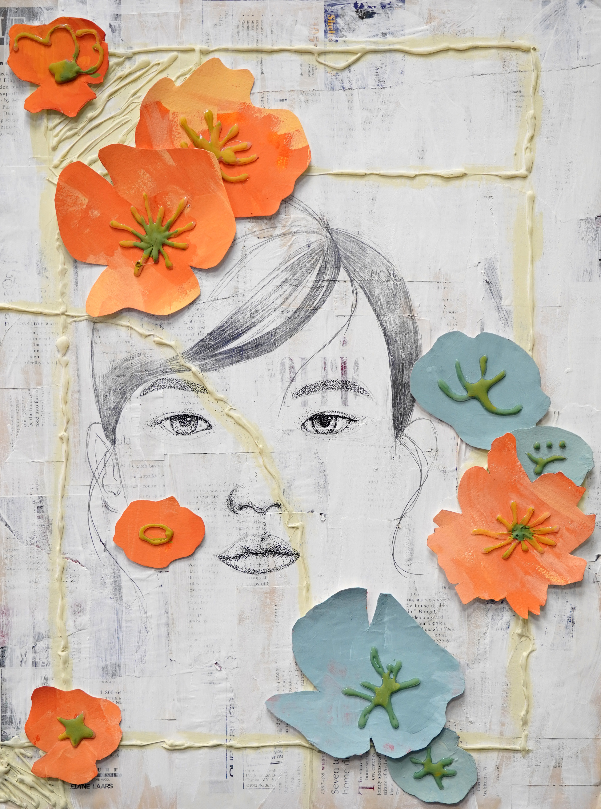

|
This is Who I am
Life is like a kaleidoscope. It changes in color and shape. This piece is designed to serve as an artistic rendering of my identity. As an Asian American, finding ways to bring me closer to my community and expanding upon my roots is an essential part to my self development. I reflected on what has held a significant meaning to me during life.
I used various colors and shapes to represent the rich experiences in my life. I embedded an image of LA (on the left) from an old magazine. I cut out irregular holes in a thicker piece of blue cardboard to symbolize my connected communities. I then glued a cardboard network to my chest, symbolizing how I put community first. The gemstones I glued down symbolize activities I have done with art and technology. It serves as a colorful reflection to my life experiences. I hope to show who I am to everyone who stumbles upon this piece.
|
 |
Life: The Documentary
Life passes quickly. One day you are born, and in an instant you are quickly approaching the end of your life. Our memories are not always reliable as they fade over time, so I find it important to capture moments that help you remember and appreciate our lives.
To convey this sentiment, I take moments from life and try to capture their essence on canvas. To emphasize the importance of life, I created flowing lines. These lines reveal the fleeting moments of life and how quickly they can go by if not paid attention to. The colors get darker as life goes on, but at the end of their life, the lighter purple color reveals that they are happier now that they lived their life fully. I created this piece to show the joy in life and to show people that they should pursue things they love while they are still young.
|
|  |
Youth and Beauty
We have all gone through a period of youth and beauty. Even as I am getting older, I still feel young in spirit, revitalized by my passions and love for those close to me. In this piece, I want to depict just that; how everyone is beautiful and full of youth regardless of age or looks.
I glued down strips from old magazines to resemble aging, adding the frame by using colored hot glue. Using a thick sketchbook paper, I cut out flowers and painted over them using colors of undying orange and fading blue to represent beauty at different points in time. I added details of the flowers by using more hot glue and painting over it.
When I used a pencil to draw the woman's head and face, I left half of her hair white, to resemble the incoming elderly age. And I contrasted that with the youthful right side of her face to show the aging process.
|